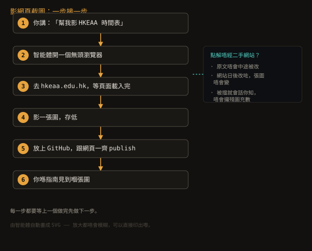
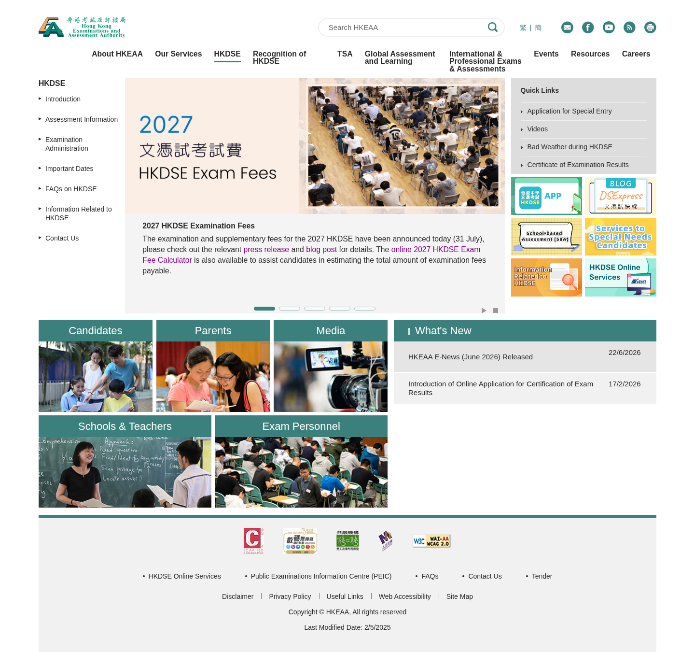
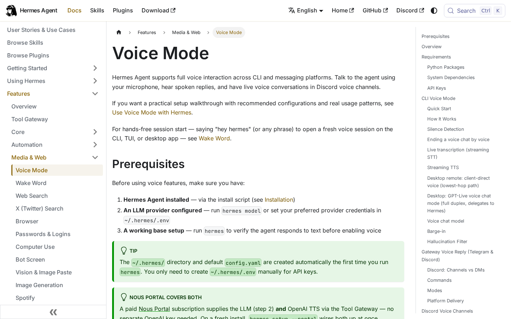
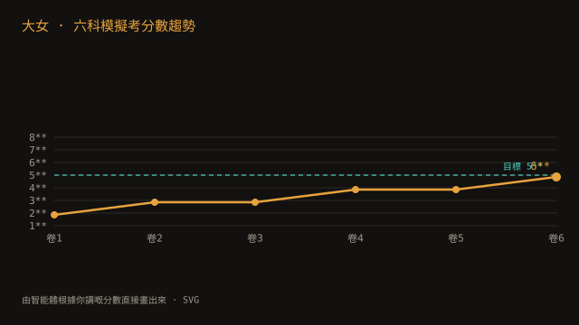
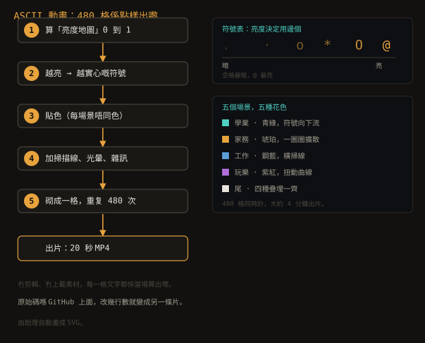
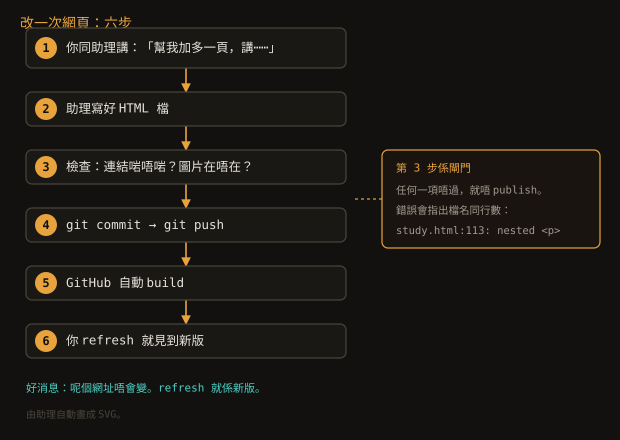
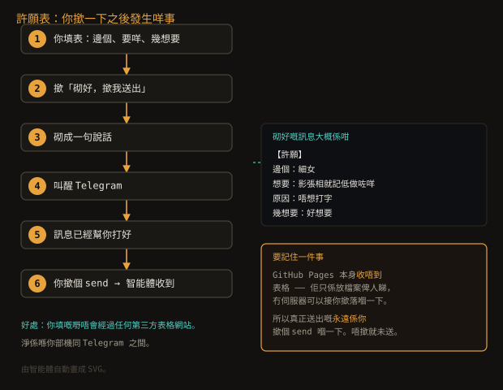

一、影網頁：headless browser 係咩？
你喺 學業指南 或者 玩樂指南
見到嘅網頁截圖，唔係助理自己畫嘅，係助理幫你開一個真嘅瀏覽器，
去嗰個網址影張相。
「headless」係咩意思？
瀏覽器（Chrome、Safari、Edge）開一個網頁，正常情況你見到個視窗。
但伺服器上面嘅電腦冇屏幕，根本唔需要開個視窗出嚟——
只需要個程式將網頁「讀入去」然後畫成圖。
Headless browser 意思就係淨係用瀏覽器嘅引擎，唔開視窗。
點解要咁做？
- 你可以直連原文（hkeaa.edu.hk），唔使經過任何中途網站
- 網站日後改咗，你張圖唔會變——因為張圖已經存咗喺呢度
- 有啲網站會擋自動瀏覽器。呢種情況助理會話你知，
唔會攞張殘缺嘅圖充數
實際流程

每一步都要等上一個做完先做下一步。
SVG 原始碼（GitHub）
呢兩張就係咁做出嚟嘅：

直接從 hkeaa.edu.hk 攞。

呢張係語音功能嘅文件頁。功能仲未開通——
呢個頁只係留低做記錄。開通之後才會喺指南教大家用。
二、畫圖：SVG
學業指南 入面嗰張分數趨勢圖，
唔係用畫圖軟件畫——係助理直接寫成代碼，
每一條線、每一個點、每一個字都由文字描述。
呢個格式叫 SVG。佢最大嘅優點係
放大都唔會模糊，
所以印出嚟貼喺雪櫃、擺喺學校報告都仲係清楚。

原始碼喺
GitHub 上面——
開個 browser 打開就見到全部代碼。
改圖唔使重畫
因為佢係代碼，助理可以只改其中一兩行。
你講「深啲」、「加多一條⋯⋯」，佢改完即刻 publish，
但個網址唔變。
三、短片：ASCII 動畫
主頁頂部嗰條 20 秒嘅動畫，做法同 SVG 類似，都係寫代碼出嚟。
點解字可以郁？

每一步喺每一格重複 480 次。
SVG 原始碼（GitHub）
詳細講：
- 用數學算出一個「亮度地圖」——
每一格該著幾多光（0 到 1）
- 亮度越高，就配一個更實心嘅符號
（空格 →
. → o → @ → 實心方塊）
- 貼上顏色（每個場景有唔同色系）
- 加掃描線、halo（光暈）、雜訊、邊緣變色，做出舊 CRT 螢幕感
五個場景，五種唔同花色：
- 學業 — 青綠色，符號向下流動，似答題時嘅感覺
- 家務 — 琥珀色，一圈圈擴散，似屋企嘅暖光
- 工作 — 鋼藍色，橫掃線，似報表
- 玩樂 — 紫紅色，扭動嘅曲線，純粹亂郁
- 尾 — 四種疊埋一齊，三個人變成一個腦
全部 480 格係平行計，同時跑，大概 4 分鐘出片。
原始碼喺
GitHub 上面。
想改顏色、改節奏、改符號——改幾行數就得。
四、網頁本身
呢四頁指南（加呢頁）全部係助理寫嘅 HTML。
流程好簡單：

第 3 步係閘門：任何檢查唔過就唔會 publish。
SVG 原始碼（GitHub）
有四道自動檢查
每次 publish 之前，會有四個自動檢查跑一次，
任何一個唔過就唔會 publish：
- 每一頁有冇漏咗連結（全部頁要互相連得通）
- 所有圖片、影片檔在唔在
- SVG 檔格式對唔對（防止畫唔出嚟）
- 冇殘留嘅 Markdown 符號（`**`）—— 呢樣捉過我一次
- 冇用文字砌出嚟嘅流程圖（流程圖一定要用 SVG）
第 4 個檢查捉過我：
我寫頁嗰陣喺一個格仔入面用咗 `**出嚟嘅嘢**`，
Markdown 嘅粗體寫法喺 HTML 入面會原樣顯示出嚟，
讀者會見到兩個星號。所以加咗自動檢查，
唔準再犯。
六、許願表：表格點樣送得到
你可能會問：GitHub Pages 淨係得啲檔案，表格填完送去邊？
答案：GitHub Pages 收唔到表格。
Pages 只係放 HTML、圖片、CSS 落去俾人睇，
冇伺服器可以接收你撳「送出」嗰一下。
呢個唔係壞咗，係 Pages 本身設計咁。
所以表格唔會「自己送去」。佢改為做一件事：
砌好一句說話，然後叫醒 Telegram。
Telegram 開一個對話，訊息已經幫你打好，
你撳個 send 就真正送到。

重點：冇第三方表格服務。你填嘅內容唔會經過
Formspree、Google 之類嘅網站，淨係喺你部機同 Telegram 之間。
管理員可以再簡化一步：
如果話得返助理個 Telegram 名（唔使 @），加落
<html data-telegram-bot="名">，
按落去就會直接開助理個對話，
唔使喺分享選單度返揀。
七、私隱嗰半邊
你睇嘅呢啲頁面係公開嘅，因為入面冇任何個人資料。
但助理點樣開口、邊啲唔會做——
例如唔會寫 essay、唔會就醫療俾建議——
呢啲設定喺另一個私人 repository，
唔會公開。
分開係有原因：語氣規則入面會提到成員嘅習慣同埋工作細節，
呢啲唔應該出現喺公開網頁。
想自己試？
「幫我影一張 HKEAA 網頁截圖」
「用我嘅分數畫張圖」
「做段 ASCII 動畫，講⋯⋯」
「幫我做個網頁，⋯⋯」